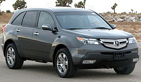
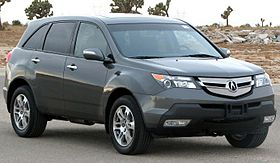
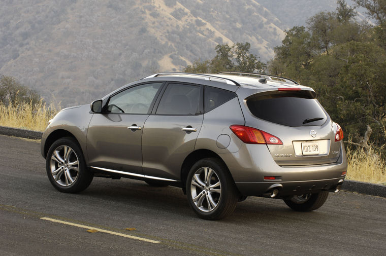
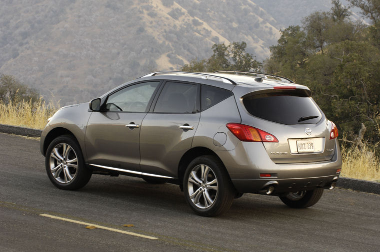
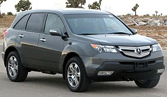
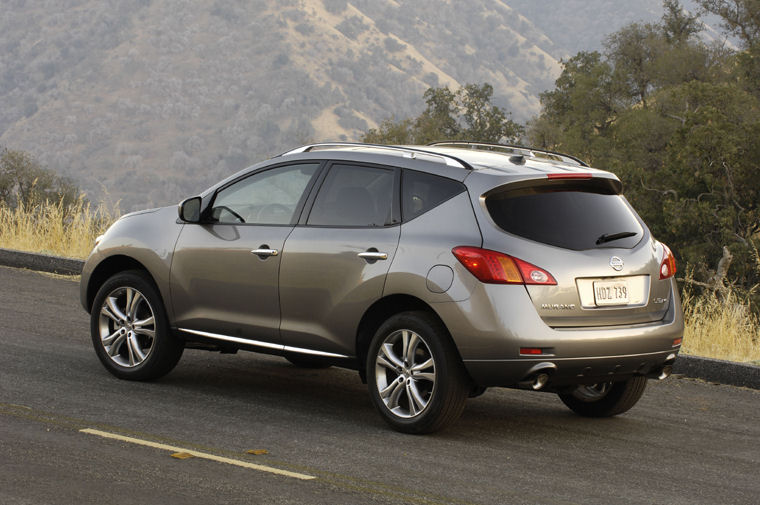

.jpg "2016 Toyota Avalon")
.jpg "2008 Toyota Camry")
.jpg "2006 Toyota Highlander")
.jpg "2010 Lexus RX350")
.jpg "2012 Toyota Venza")
.jpg "2007 Nissan Pathfinder")

.jpg "Range Rover 2016") 

 

We also have sedans, hatchbacks, coupes, and even classic vintage! All vehicles come with 3 years warranty (Terms & Conditions apply).



We also have sedans, hatchbacks, coupes, and even classic vintage! All vehicles come with 3 years warranty (Terms & Conditions apply).
Announced in April 2000 at the New York Auto Show and arriving in late 2000 in Japan and January, 2001, in North America, the Highlander became the first car-based midsize SUV or midsize crossover. The Highlander is the crossover counterpart to the more rugged, truck-based midsize 4Runner and became Toyota's best-selling SUV before being surpassed by the smaller RAV4 in 2006.
Here in Nigeria, it is a very popular SUV to see on a daily basis. Many owners can attest to its reliability, strength and performance.
 It came in five (2001–2007) and seven-seat (2004–2007) configurations and became a sales success for Toyota in a number of markets across the world. The Highlander came standard with front wheel drive and offered all wheel drive (50:50 front:rear fixed torque split). Unlike Toyota's own 4Runner and other midsized competitors such as the Jeep Grand Cherokee, or Chevrolet TrailBlazer, the Highlander aimed for on-road comfort with its unit body construction and independent rear suspension. Although it was longer than the 1996–2002 4Runner available at the time it was launched, the Highlander was surpassed in length by the redesigned 4Runner in 2002.
It came in five (2001–2007) and seven-seat (2004–2007) configurations and became a sales success for Toyota in a number of markets across the world. The Highlander came standard with front wheel drive and offered all wheel drive (50:50 front:rear fixed torque split). Unlike Toyota's own 4Runner and other midsized competitors such as the Jeep Grand Cherokee, or Chevrolet TrailBlazer, the Highlander aimed for on-road comfort with its unit body construction and independent rear suspension. Although it was longer than the 1996–2002 4Runner available at the time it was launched, the Highlander was surpassed in length by the redesigned 4Runner in 2002.
The Highlander was available in three trim lines:
The Base and Limited models were present when the Highlander was initially introduced, while the Sport model was introduced in March 2006 . In 2004 the wheels on the Limited trim changed from a six-spoke, to a five-spoke alloy. The base-model Highlander wheels also changed from steel-rims to the alloy wheels that were on the 2001–2003 model year Highlander Limited and B-Package. The Sport models had a distinctive grille design, differentiating themselves from the non-Sport models. Wheel styling also serves to differentiate the various models—the hybrid sports a unique twin-spoke design. In addition to the 3.3-liter engine, 2004 V6-powered models were equipped with a new five-speed automatic transmission, replacing a 4-speed automatic transmission, while the 4-cylinder models continued to use the old 4-speed automatic transmission. This year also saw the introduction of the optional third row seat allowing for two additional passengers. The unibody was slightly modified behind the second row seats to include a depression in the trunk floor able to accommodate the optional third row seating. On models without third row seating, this depression was turned into a storage compartment. (Prior to 2004 the spare tire was accessible from inside the vehicle where the third row seating would subsequently be located; beginning in 2004 the spare tire is accessible from underneath the vehicle.) Subtle changes to the front grille, front and rear bumpers, and headlights round-out the major changes for the 2004 mid-cycle refresh.
 For the 2011 model year, Toyota made some changes to the Highlander and Highlander Hybrid. While the general design remains similar to the 2010 model, the Highlander's front end has been significantly revised, now featuring new headlights, a new black with chrome accent rocker panel, and new front grille. The non-hybrid engines for 2011 remain the same, although now the 2.7-liter four-cylinder engine may be had on the SE trim level, previously only available on the base model. More standard features are now equipped on all trim levels, with the base model receiving front and rear air conditioning, power locks/windows, cruise control, and a multi-function keyless entry control.
For the 2011 model year, Toyota made some changes to the Highlander and Highlander Hybrid. While the general design remains similar to the 2010 model, the Highlander's front end has been significantly revised, now featuring new headlights, a new black with chrome accent rocker panel, and new front grille. The non-hybrid engines for 2011 remain the same, although now the 2.7-liter four-cylinder engine may be had on the SE trim level, previously only available on the base model. More standard features are now equipped on all trim levels, with the base model receiving front and rear air conditioning, power locks/windows, cruise control, and a multi-function keyless entry control.
Ok so that wraps it up for our daily review. Meanwhile tell us how you celebrate after your SUV purchase.
This couple here clearly were very excited as you can see.
All rights reserved ®. 2020 Exclusive Motors Limited